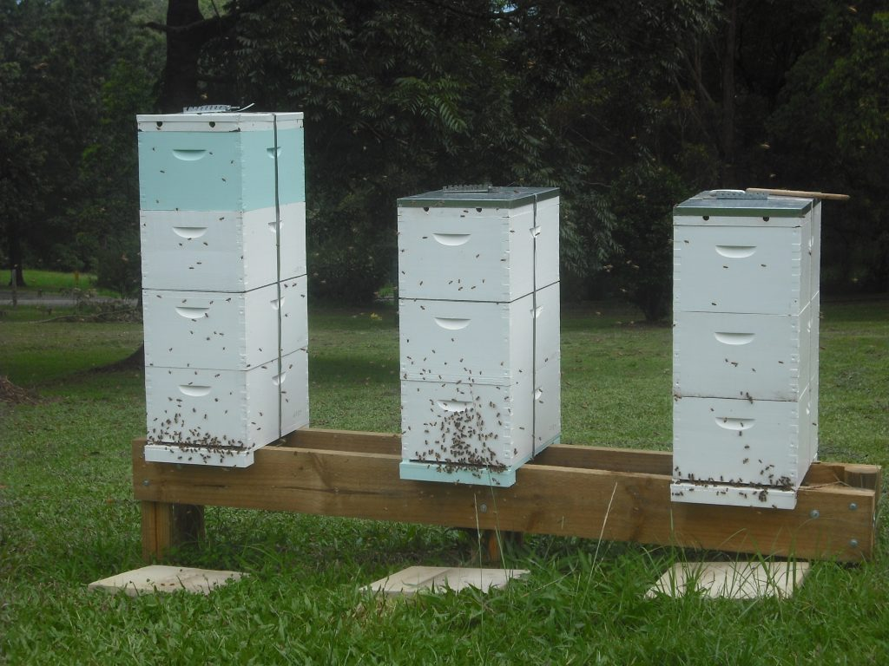

How to Start Beekeeping: A Beginner’s Guide
Starting a beekeeping business or hobby can be very rewarding. Here’s everything you need to know to begin your journey:
Steps to Start Beekeeping:
- Choose a suitable location for your beehive.
- Get the necessary tools and equipment.
- Buy your first colony of bees.
- Set up the hive and install the bees.
- Maintain and monitor your hive regularly.

Key Tips for Success:
Make sure to monitor your bees regularly for signs of disease or pests. Consider joining a local beekeeping association for support and advice.